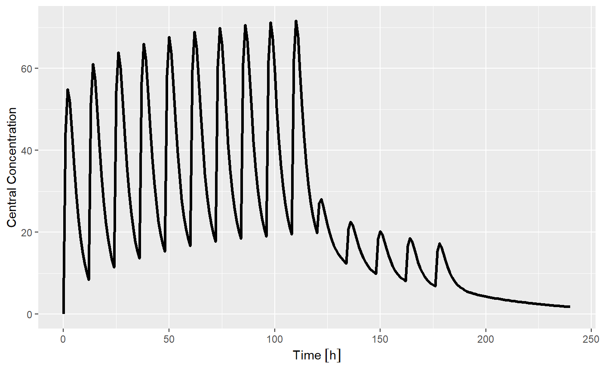
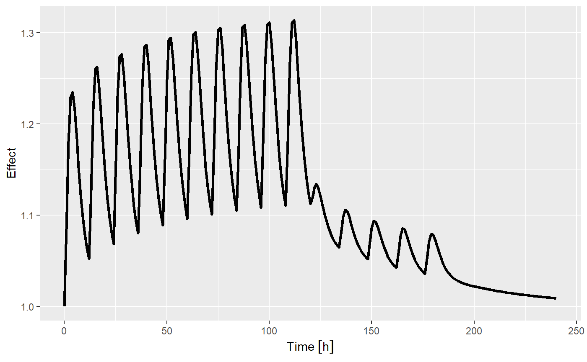

RxODE-intro.RmdRxODE is an R package that facilitates simulation with ODE models in R. It is designed with pharmacometrics models in mind, but can be applied more generally to any ODE model.
The model equations can be specified through a text string, a model file or an R expression. Both differential and algebraic equations are permitted. Differential equations are specified by d/dt(var_name) =. Each equation can be separated by a semicolon.
To load RxODE package and compile the model:
library(RxODE)
library(units)
#> udunits system database from /usr/share/udunits
mod1 <-RxODE({
C2 = centr/V2;
C3 = peri/V3;
d/dt(depot) =-KA*depot;
d/dt(centr) = KA*depot - CL*C2 - Q*C2 + Q*C3;
d/dt(peri) = Q*C2 - Q*C3;
d/dt(eff) = Kin - Kout*(1-C2/(EC50+C2))*eff;
});Model parameters can be defined as named vectors. Names of parameters in the vector must be a superset of parameters in the ODE model, and the order of parameters within the vector is not important.
theta <-
c(KA=2.94E-01, CL=1.86E+01, V2=4.02E+01, # central
Q=1.05E+01, V3=2.97E+02, # peripheral
Kin=1, Kout=1, EC50=200) # effectsInitial conditions (ICs) are defined through a vector as well. If the elements are not specified, the initial condition for the compartment is assumed to be zero.
inits <- c(eff=1);RxODE provides a simple and very flexible way to specify dosing and sampling through functions that generate an event table. First, an empty event table is generated through the “eventTable()” function:
ev <- eventTable(amount.units='mg', time.units='hours')Next, use the add.dosing() and add.sampling() functions of the EventTable object to specify the dosing (amounts, frequency and/or times, etc.) and observation times at which to sample the state of the system. These functions can be called multiple times to specify more complex dosing or sampling regiments. Here, these functions are used to specify 10mg BID dosing for 5 days, followed by 20mg QD dosing for 5 days:
ev$add.dosing(dose=10000, nbr.doses=10, dosing.interval=12)
ev$add.dosing(dose=20000, nbr.doses=5, start.time=120, dosing.interval=24)
ev$add.sampling(0:240)If you wish you can also do this with the mattigr pipe operator %>%
ev <- eventTable(amount.units="mg", time.units="hours") %>%
add.dosing(dose=10000, nbr.doses=10, dosing.interval=12) %>%
add.dosing(dose=20000, nbr.doses=5, start.time=120,dosing.interval=24) %>%
add.sampling(0:240);The functions get.dosing() and get.sampling() can be used to retrieve information from the event table.
head(ev$get.dosing())
#> id low time high cmt amt rate ii addl evid ss dur
#> 1 1 NA 0 NA (default) 10000 0 12 9 1 0 0
#> 2 1 NA 120 NA (default) 20000 0 24 4 1 0 0head(ev$get.sampling())
#> id low time high cmt amt rate ii addl evid ss dur
#> 1 1 NA 0 NA (obs) NA NA NA NA 0 NA NA
#> 2 1 NA 1 NA (obs) NA NA NA NA 0 NA NA
#> 3 1 NA 2 NA (obs) NA NA NA NA 0 NA NA
#> 4 1 NA 3 NA (obs) NA NA NA NA 0 NA NA
#> 5 1 NA 4 NA (obs) NA NA NA NA 0 NA NA
#> 6 1 NA 5 NA (obs) NA NA NA NA 0 NA NAYou may notice that these are similar to NONMEM event tables; If you are more familiar with NONMEM data and events you could use them directly with the event table function et
ev <- et(amountUnits="mg", timeUnits="hours") %>%
et(amt=10000, addl=9,ii=12,cmt="depot") %>%
et(time=120, amt=2000, addl=4, ii=14, cmt="depot") %>%
et(0:240) # Assumes sampling when there is no dosing informationYou can see from the above code, you can dose to the compartment named in the RxODE model. This slight deviation from NONMEM can reduce the need for compartment renumbering.
These events can also be combined and expanded (to multi-subject events and complex regimens) with rbind, c, seq, and rep. For more information about creating complex dosing regimens using RxODE see the RxODE events vignette.
The ODE can now be solved by calling the model object’s run or solve function. Simulation results for all variables in the model are stored in the output matrix x.
| time | C2 | C3 | depot | centr | peri | eff |
|---|---|---|---|---|---|---|
| 0 | 0.00000 | 0.0000000 | 10000.000 | 0.000 | 0.0000 | 1.000000 |
| 1 | 44.37555 | 0.9198298 | 7452.765 | 1783.897 | 273.1895 | 1.084664 |
| 2 | 54.88296 | 2.6729825 | 5554.370 | 2206.295 | 793.8758 | 1.180825 |
| 3 | 51.90343 | 4.4564927 | 4139.542 | 2086.518 | 1323.5783 | 1.228914 |
| 4 | 44.49738 | 5.9807076 | 3085.103 | 1788.795 | 1776.2702 | 1.234610 |
| 5 | 36.48434 | 7.1774981 | 2299.255 | 1466.670 | 2131.7169 | 1.214742 |
You can also solve this and create a RxODE data frame:
x <- mod1 %>% solve(theta, ev, inits);
x
#> ▂▂▂▂▂▂▂▂▂▂▂▂▂▂▂▂▂▂▂▂▂▂▂▂▂▂▂ Solved RxODE object ▂▂▂▂▂▂▂▂▂▂▂▂▂▂▂▂▂▂▂▂▂▂▂▂▂▂▂
#> ── Parameters (x$params): ─────────────────────────────────────────────────
#>
#> V2 V3 KA CL Q Kin Kout EC50
#> 40.200 297.000 0.294 18.600 10.500 1.000 1.000 200.000
#> ── Initial Conditions (x$inits): ──────────────────────────────────────────
#> depot centr peri eff
#> 0 0 0 1
#> ── First part of data (object): ───────────────────────────────────────────
#> # A tibble: 241 x 7
#> time C2 C3 depot centr peri eff
#> [h] <dbl> <dbl> <dbl> <dbl> <dbl> <dbl>
#> 1 0 0 0 10000 0 0 1
#> 2 1 44.4 0.920 7453. 1784. 273. 1.08
#> 3 2 54.9 2.67 5554. 2206. 794. 1.18
#> 4 3 51.9 4.46 4140. 2087. 1324. 1.23
#> 5 4 44.5 5.98 3085. 1789. 1776. 1.23
#> 6 5 36.5 7.18 2299. 1467. 2132. 1.21
#> # … with 235 more rows
#> ▂▂▂▂▂▂▂▂▂▂▂▂▂▂▂▂▂▂▂▂▂▂▂▂▂▂▂▂▂▂▂▂▂▂▂▂▂▂▂▂▂▂▂▂▂▂▂▂▂▂▂▂▂▂▂▂▂▂▂▂▂▂▂▂▂▂▂▂▂▂▂▂▂▂▂This returns a modified data frame. You can see the compartment values in the plot below:

Or,

Note that the labels are automatically labeled with the units from the initial event table. This is because RxODE uses the units package to handle units and ggforce to handle the plotting.